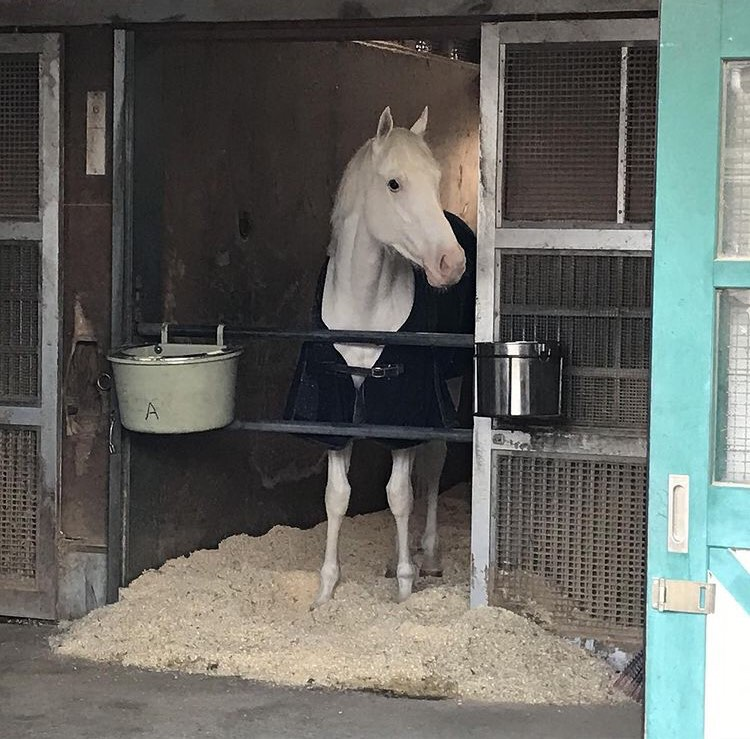

Kvíz Sodashiról

1. Mikor születt Sodashi?
2014. január 30.-án született.
2018. március 8.-án született.
2000 szeptember 1.-én született.
2. Melyik ország híres lova Sodashi?
Sodashi egy brit versenyló.
Sodashie egy Kinai ló.
Sodashie egy Japán versenyló.
3. Hány csikója van Sodashinak?
Nincs csikója.
Hat csikója van Sodashinak.
Sodashinak egy csikója van.
4. Mekkora előnnyel nyert a 2021-es Fillies Triple Crown első szakaszán?
Három lóhosszal.
Két orrhosszal.
Egy nyakhosszal.
5. Hol szenvedte el első vereségét?
2020-ban a Janán Derbyn.
2021-es japán tölgyben , a Triple Crown második szakaszán.
Soha nem veszett, a mai napig veretlen.